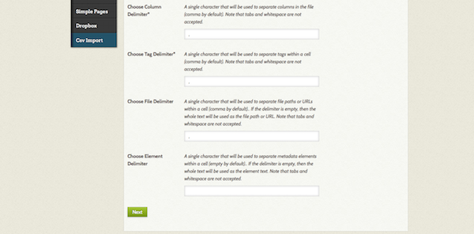

The CSV Import plugin allows users to import items from a simple CSV (comma-separated values) file, and then map the CSV column data to multiple elements, files, and/or tags. Each row in the file represents metadata for a single item.
When using this plugin, if you plan to map to specific Item Type metadata fields, then you may only import one item type (document, still image, sound, et al) at a time. You may perform multiple imports.
The plugin has the following features:
- File importing: If you specify permanent file URLs in a column, the importer will download and attach a file to each created item. NB: file import only works for files hosted and publicly available online; you cannot import files from a local source (ie, your computer) or from a password-protected location.
- Tag imports: You may include tags in your CSV file and those words will be imported as tags.
- Undo Imports: The Undo option lets you delete all the files added in an import.
- Set custom delimiters: you now have the option to set separate delimiters for columns, files, tags, and elements.
Preparing for CSV Import
The best option is usually to use spreadsheet software (Excel, Google Sheets, Numbers) to create and organize your data. Both of these programs can export a spreadsheet into CSV format, and will handle all the necessary escaping and quoting for you.
However, if you're creating or editing your data by hand, there are a few things to keep in mind:
- You will need to normalize your data before importing. Check to be sure that the first row of your CSV file contains column names, and that every row has the same number of columns.
- Check to see if any of the text contains commas, and if it does surround that segment with double-quotes. Many spreadsheet programs will do this for you automatically. If you are using a spreadsheet program, check the CSV that is exported by opening it in a plain text editor to see if the double-quotes are being added automatically.
- You can specify a unique delimiter for columns, files, tags, and elements. Once you do, be sure to be consistent in formatting.
- Remember, every row represents one item, and all items in the file must be the same item type.
- Look over the Dublin Core and Item Type metadata to be sure you can easily map the fields in your CSV file to the Omeka installation. Make any modifications in fields or types as necessary.
- It is possible to import files housed in a digital repository by adding the URL to that specific file in a column representing a file. You may import more than one file per item, by comma separating the urls within a cell. You must use a permanent link for this step.
Importing
A quick note about CSV formats and importing: The column delimiter is the basic building block of the CSV file, and it is a comma by default.
Each of the remaining delimiter inputs simply accepts a character that's used to separate multiple values within one "cell" of the CSV.
If you are placing multiple values in single cells, the character you're using to separate those values is the delimiter. The plugin allows you to specify different delimiters for cells that contain tags, links to files, or normal element data.
To import, go to the CSV Import tab in the left navigation bar in the admin Dashboard.
Step 1: Select File and Item Settings - Select a CSV file from your computer using the Choose File button. - If using an export from an Omeka CSV report, click the next checkbox, which will override all of the following options. - You can use Automap Column Names to Elements if you have formatted your column names as follows: "ElementSetName:ElementSet", for example DublinCore:Title. - Select Item Type of the sheet to be imported. NB you can only import one item type at a time. - You can also Select Collection to which to add the imported items. - There are two checkboxes to make all of the imported items Public and/or Featured


- The next four fields are for those who are not using a standard csv for their data:
- If you are not using commas to separate your columns, enter the character you are using instead in the Choose Column Delimiter . Note: You may not use a tab or an empty space.
- If you have used a character other than a comma to separate tags within individual cells in your CSV file, you must indicate that in the Choose Tag Delimiter field. Note: You may not use a tab or an empty space.
- If you have used a character other than a comma to separate multiple URLs within a cell (if you are importing items from an outside repository, for example), indicate that in the Choose File Delimiter field. Note: You may not use a tab or an empty space.
- If any of your metadata fields has more than one element (if your item has more than one creator, for example), please tell the plugin what character you used to separate the elements. If you have more than one element in a a field but leave this blank, the plugin will treat the entire text block as one element. Note: You may not use a tab or an empty space.
Click the Next button once you have filled out the above options to your satisfaction.
Step 2: Map Columns to Elements, Tags, or Files On this next screen, you will see a table which includes each of the Dublin Core fields in Omeka, the text from your CSV file that is designated for that field. The "Example from CSV file" column in the table shows the data from the first row of data in your CSV, after the column headings.
For each row in the table (which corresponds to a column in your original CSV) you have the following options: - Map to Element: Select an element (all of your element sets should be represented) to which to map the column. - Click the Use HTML checkbox if this data includes HTML markup. - Click the Tags? checkbox (and do not map to an element) to map this data as tags - Click the Files? to map this data as a file import.

Click the Import CSV File button to complete the import.
You may check on the progress of your import using the Status tab.
Undo an Import
To undo an import: - Click on the CSV Import administrative tab. - Click the Status tab. - Click the Undo link for the Import you want to undo. This will delete all items for this import.

If your import hangs without completing for an extended period but the link to undo the import does not appear, you can enter the link directly into your browser address bar according to the following example: http://yourinstallurl/admin/csv-import/index/undo-import/id/idnumberforimport
For example, if your Omeka instance was at the root of example.com and this was your 3rd CSV import, you would use
http://example.com/admin/csv-import/index/undo-import/id/3. You can hover over the links for previous or subsequent imports to deduce the Import ID.
Troubleshooting
If you are having trouble with a CSV consistently not importing, try checking for these common issues: - Are your file links readable? Try copying and pasting them into the address bar of a browser to see if the link resolves with a file. If it does not, then that may be the issue. - Check the encoding on your CSV file. It should be UTF-8 - Open your CSV file with a different program than the one you created it with and make sure that every row has the same number of columns. - Open your CSV file in a text editor and ensure that text blocks are contained in double quotes.